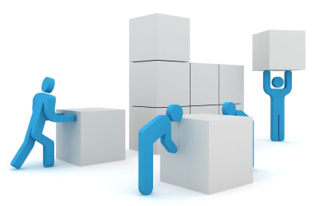

 The concept of a blockchain can be an enigmatic and overwhelming topic, but at it's core it's simply a digital ledger that is distributed and held by every participant ( or node ) connected to a network. Much like a traditional ledger a blockchain contains important information, such as financial transactions, but instead of this data being stored on a page it's stored in a block. Theses blocks are chained together one after the other forming a blockchain.
Different blockchains may add blocks to their chain using different consensus algorithms ( an agreed on set of rules to how and when new blocks are added), the most well-known of which is Bitcoin’s Proof-of-Work.
The first rule of Proof-of-work is that one block should be added to the blockchain, roughly, every ten minutes. This is accomplished through the process of ‘mining’. Nodes attempting to add a block to the chain are called ‘miners’. They use computational power of their computers to try and solve a cryptographic ‘puzzle’. Only when this puzzle is solved, can a block be added to the chain. Each miner who solves the puzzle, or ‘mines’, a new block that is added to the chain, is rewarded by the network. In the case of Bitcoin the reward is 12.5 newly minted bitcoins.
When a new block is mined, all the nodes will first check if the block is valid and add it to their copy of the chain. Nodes will only add a new block to their chain if it follows the rules of the consensus algorithm. Only once a consensus is reached, is the new block officially confirmed and added to the blockchain. Because of the vast number of copies of a blockchain and the resources needed to add new blocks, it is extremely difficult to alter the chain or the data stored within.